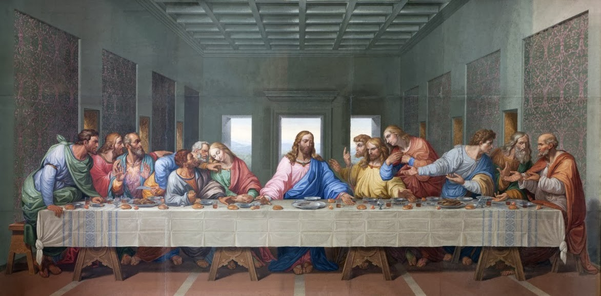

The Last Supper
THE LAST SUPPER
INTRODUCTION :
The Last Supper is a late 15th-century mural painting by Italian artist Leonardo da Vinci housed by the refectory of the Convent of Santa Maria delle Grazie church in Milan, Italy. It is one of the Western world's most recognizable paintings.This eight-metre-wide painting is a copy of Leonardo da Vinci’s Last Supper, depicting the part of the Bible where Jesus announces at dinner that one of his 12 loyal supporters (disciples) will betray him before sunrise.
PAINTING - "THE LAST SUPPER" :

PAINTING INFORMATION :
| Artist |
Leonardo da Vinci |
| Year |
1490s (Julian) |
| Movement |
High Renaissance |
| Dimensions |
700 cm (280 in) × 880 cm (350 in) |
| Co-ordinates |
45°28′00″N 9°10′15″E |
CHARACTERS IN THE PAINTING :
The 12 apostles are :
-
- Peter :
- Peter is the leader of the early Christian church.Peter was a native of Bethsaida. He
was the brother of Andrew and lived in a fishing town- Capernaum.He was a
fisherman by occupation on the Sea of Galilee.He was a married man.
-
- John :
- John was the brother of James and the son of Zebedee. He lived in Capernaum in Galilee, but most probably a native of Bethsaida. He was a fisherman on the Sea of Galilee along with his brother and father.
He was one of the three disciples, closest to Jesus, the others being Peter and James.
-
- James :
-
James was the son of Zebedee, the older brother of John , by occupation a fisherman along with his brother and father at the Sea of Galilee,
in partnership with Peter and Andrew. He was the first disciple (apostle) to be martyred after Jesus’ resurrection.
-
- Andrew :
-
Andrew was the brother of Simon Peter, the son of Jonas, lived in Capernaum like his brother,and was a fisherman by occupation. He brought Peter, his brother, to Jesus.
-
- Philip :
-
Philip was a close friend of Andrew and Peter, and a native of Bethsaida . Jesus called Philip near Bethany where John the Baptist was preaching. He was the one who persuaded and brought Nathaniel to Jesus.
-
- Bartholomew :
-
Bartholomew is mentioned in all the four lists of the apostles in the New Testament.
There is no other reference to him in the New Testament. Nothing much is known about him.
-
- Thomas :
-
Thomas is also called ‘Didymus’ or ‘the Twin’. When Jesus appeared to the apostles after His resurrection, Thomas was not present with them. Later on, when the disciples told him about Jesus’ appearance,
he would not believe them, until Jesus showed Himself a week later. His occupation is unknown.
-
- Mathew :
-
Mathew is also called ‘Levi’. He was a tax collector by occupation. Jesus called him to be one of his disciples,
when he was at the tax office. He is ascribed to be the author of the Gospel according to Matthew.
-
- James :
-
James was one of the apostles of Christ. He was the son of Alphaeus. Nothing much is known about him.
-
- Thaddaeus :
-
Thaddaeus is mentioned in two of the four lists of Jesus’ disciples. In the other two lists he is also called as Jude of James, Jude Thaddaeus, Judas Thaddaeus or Lebbaeus.
Nothing else is known about him, apart from the mention of his names in the two lists.
-
- Simon the Zealot :
- Simon was another disciple of Jesus. He was a member of a party later called as the ‘Zealots’.
-
- Judas Iscariot :
-
Judas Iscariot was the infamous disciple who betrayed Jesus. His last name ‘Iscariot’ is from the Hebrew word ‘Ish Kerioth‘ meaning ‘a man from Kerioth’, a place in the south of Judah. He was a treasurer of the group.
After his betrayal of Jesus, he grieved for his actions and committed suicide. He is always mentioned last in the list of apostles.